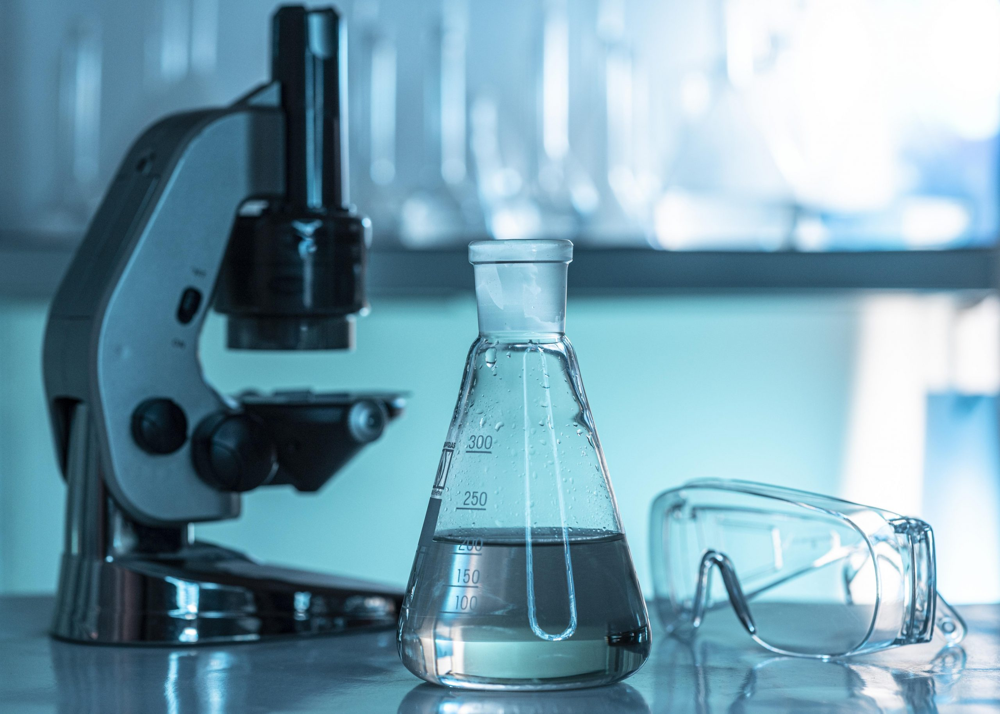

Abdul Muyeed Bhuiya

Ph.D. Candidate in Bioengineering
UC Berkeley-UCSF
Skills
Wet lab skills

- Expertise in molecular biology techniques including ELISA, mass spectrometry, immunohistochemistry, Western blotting, and column chromatography
- Proficient in designing and assembling microfluidic devices for sample processing, RT-LAMP reactions, and Cas13-based assays
- Experience with advanced microscopy techniques such as brightfield, darkfield, fluorescence, phase contrast, transmission electron microscopy, and TIRF microscopy
- Synthesis and characterization of liposomes for diagnostic and therapeutic applications
- Phage ImmunoPrecipitation and Sequencing (PhIP-Seq) for pathogen detection and immune response profiling
Assay and Device Development
- Developed bead-based surface Cas13 assays for multiplexed RNA detection
- Integrated custom cartridges with imaging systems for automated fluorescence-based assays
- Designed custom PDMS-on-glass chambers for scientific observation of biological systems
- Prototyped and laser-cut custom molds for microfluidic devices
- Developed point-of-care diagnostic devices for infectious diseases using CRISPR and smartphone-based microscopy
Data Analysis and Computational
- Proficient in statistical analysis and data visualization using MATLAB, R, and Python
- Experience in bioinformatics tools for genome assembly, gene annotation, and phylogenetic analysis
- Time series data analysis for fluorescence imaging and amplification curve generation
- Expertise in ImageJ for cell growth analysis and fluorescence quantification
Software & Programming
- Skilled in MATLAB for image acquisition, normalization, and data processing
- Programming in Arduino for automated biochip imaging systems
- Proficient in Python for data processing and algorithm development for machine learning models in biological applications

Leadership, Teaching & Mentoring
- Extensive experience mentoring high school, undergraduate, and Ph.D. students in lab-based research projects - See details Teaching & Mentoring Experiences
- Developed STEM curricula and led laboratory courses, providing hands-on training in microscopy and bioengineering techniques - See details Teaching & Mentoring Experiences
- Led cross-functional teams in the development of novel diagnostics and medical devices, collaborating across academic and industry partners
- Co-organized and participated in hackathons and design challenges, addressing public health and pandemic-related challenges - See details Extracurricular Activities